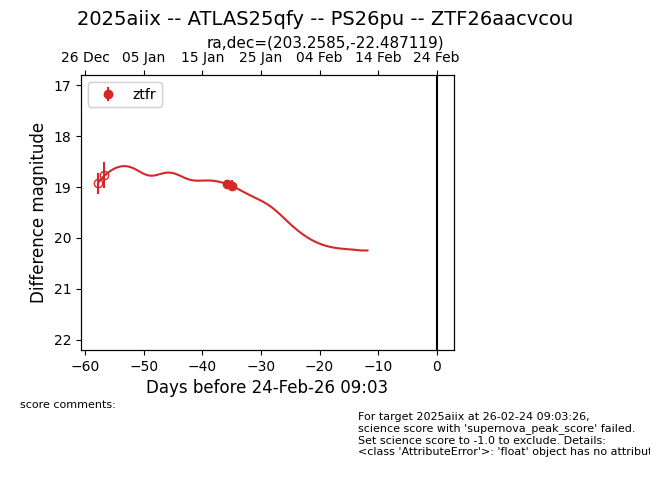
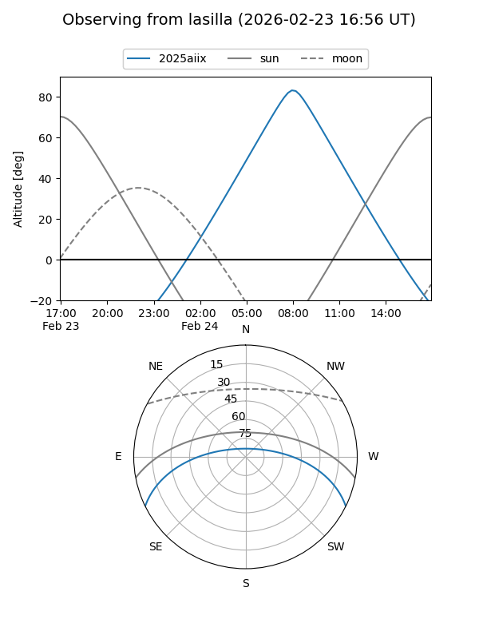
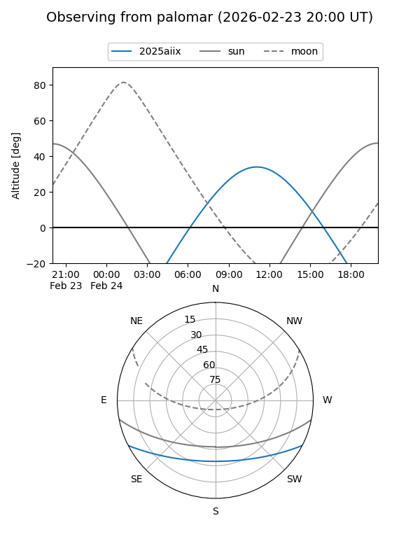
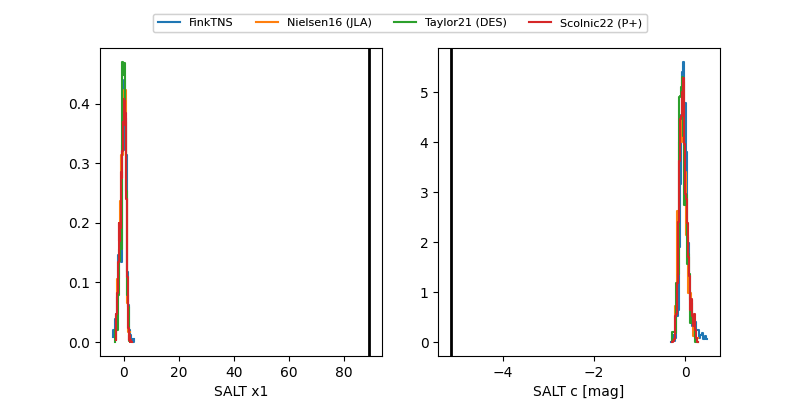

2025aiix
Target 2025aiix at 2026-01-27 04:51
Aliases and brokers:
FINK: link
Lasair: link
ALeRCE: link
TNS: link
YSE: link
alt names
ZTF26aacvcou (ztf,fink_ztf)
2025aiix (tns,yse)
ATLAS25qfy (atlas)
Coordinates:
equatorial (ra, dec) = 203.2585,-22.48712
equatorial (HMS+DMS) = 13:33:02.03,-22:29:13.63
galactic (l, b) = (315.3917,+39.37614)
Flags:
Photometry:
last ztfr=18.98
2 ztfr detections
Lightcurve

Visibility


Additional plots
